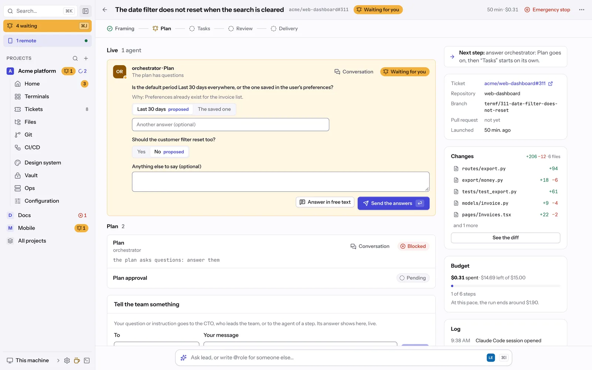
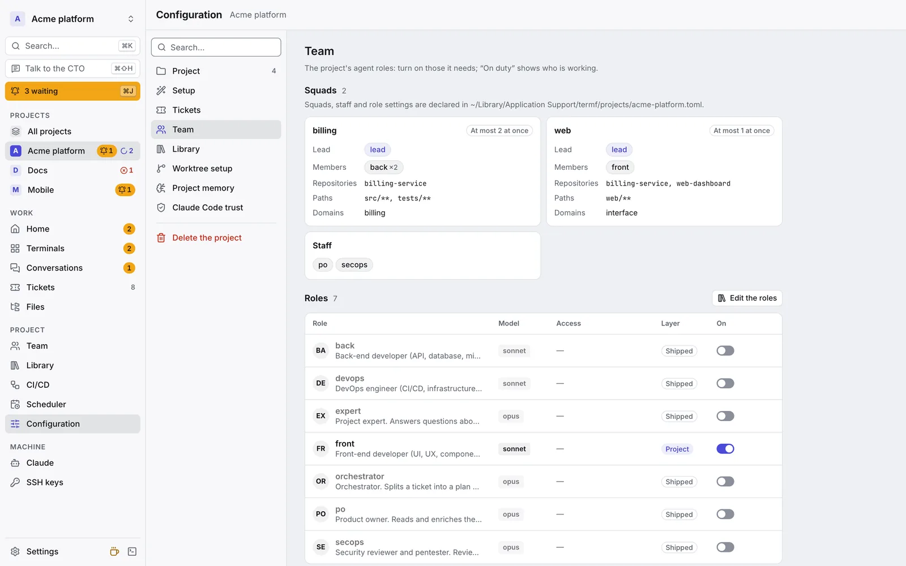
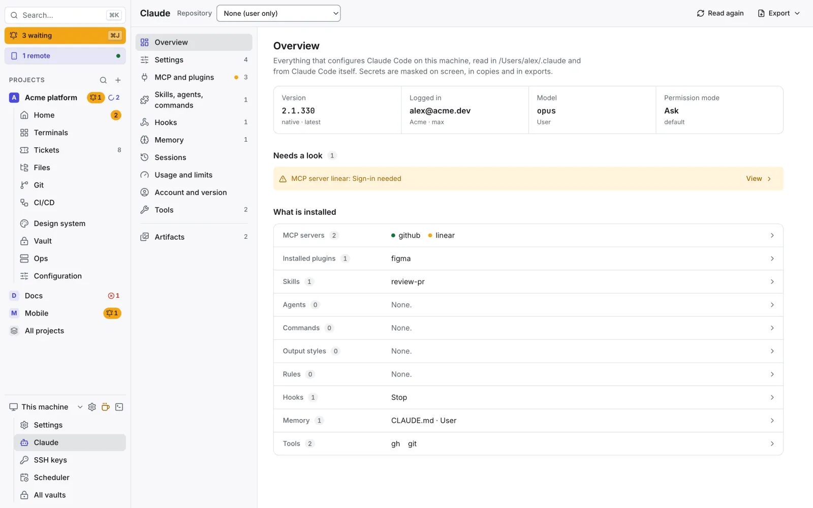

Early developmentUnsigned preview builds · release notes
The cockpit for Claude Code across all your repositories
Talk to the CTO. The team ships the tickets.
TermF keeps every Claude Code of every repository in view, in terminal tabs and splits. Ask the CTO what you want: a team of agents takes the ticket to a pull request, in its own worktree, and stops for your approval at each gate.
Every screenshot uses fictional data: the user alex and the acme repositories.
One person to talk to.
Each project opens on its Home: the CTO's conversation in the middle, and everything that needs you on the side.
The CTO, your way in
Ask for a feature, a fix or where things are. The CTO reads the project, triages each run and routes it to the right workflow and squad. Write @role to talk to someone else directly.
What waits for you, in one list
A plan to approve, a question from an agent, a permission to grant. ⌘J takes you to the next one, in any project.
The team at work
Who is on duty and on what, each run with its state, and the project's tickets ready to start.
Terminals, the Ghostty way.
Open Claude Code in as many repositories as you like, side by side, and see at a glance which one waits for you.
Tabs and free splits
⌘T for a new session, ⌘D and ⌘⇧D to split, ⌥⌘ and the arrows to move. Every shortcut can be changed.
Status from Claude Code itself
Working, waiting for you, done: read from Claude Code's hooks, with its context gauge and a notification when it needs you.
Every repository, found for you
TermF finds the git repositories on your machine and sorts them by activity. Group them into projects, broadcast a prompt to several sessions, keep a quick terminal one shortcut away.
From a ticket to a pull request.
One page per ticket follows its run from the first step to the delivery, with or without the team.
Questions before the work starts
The plan comes with its open questions and proposed answers. Change what doesn't suit you and send them all at once.
A timeline you can read
Framing, plan, tasks, review, delivery: what is done, who works on what, what it cost, against the run's budget.
Delivered when you say so
TermF shows the files and commits it would send, then opens a pull request that closes the ticket once you confirm.

A team that fits the project.
The setup assistant reads your repositories, asks a few questions and proposes the rest, item by item.
Roles and squads
CTO, product owner, lead, front, back, QA, reviewer, security, SEO and more, each with its model and effort. Squads split the work by repository, path or domain.
Rules you switch on
Strict scope, no unrequested text changes, visual review before and after: per project, ticket or task, at the level you choose.
One page per project
Repositories, ticket sources, team, library, worktree setup, project memory and Claude Code trust, all in its Configuration.

All of Claude Code, in one view.
What configures Claude Code on your machine, read from where it lives, with secrets masked.
Settings by scope
User, project and local settings, permissions, hooks and environment, with the scope that wins. Edit the simple ones in place.
MCP servers and plugins
Add, remove, turn on and off, plus skills, agents, commands, output styles and memory files.
Sessions, usage and artifacts
Resume a past conversation, see your usage and limits, and sort, open or delete your claude.ai artifacts.

Everything around the agents.
The chores of a developer's machine, next to the agents that need them.
Worktrees, ready to run
One worktree per run, inside the repository. Dependencies, .env files, a copy of the database and ports are prepared from the project's recipe.
Skills for your stack
TermF detects the stack and turns on the matching skills: 38 ship with it, from TypeScript and Svelte to Laravel, Go and Terraform. Turn them on or off per project.
The project expert
Ask how something works. It searches what the project remembers (conversations, run logs, docs, git history), indexed on your machine, and answers with its sources.
SSH keys and every key format
Generate, convert and test keys (OpenSSH, PuTTY, JWK, PKCS#8…), manage the agent and ~/.ssh/config with a preview, and give a repository its own key.
Encrypted sync
Settings, projects and conventions follow you to your other machines through a git remote or a synced folder, end-to-end encrypted, with a recovery key.
CI/CD, natively
GitHub Actions runs by repository, branch or pull request, logs with the errors found, rerun or cancel, and a failure sent back to the agent.
A scheduler for Claude
Cron tasks run in a terminal or headless, with a model, a budget and a history; headless ones even while TermF is closed.
A vault for secrets
Secrets encrypted under a master password, auto-lock, references to 1Password, Bitwarden, Doppler, AWS or HashiCorp Vault, and a hash-chained audit log. From the termf command line for now.
A command line too
Open sessions, start a run, follow a team or ask the expert from any terminal.
$ termf team status 7
How a ticket becomes a pull request.
TermF orchestrates, not a model: each step is a fresh agent session with a brief, logged and interruptible, and the steps that matter wait for you.
Triagecto
Picks the workflow, the steps and the squads.
Framingpo
Acceptance criteria, out of scope, questions.
Planlead
Tasks by role and repository.
Tasksfront · back · qa
In parallel, each in its own worktree.
Reviewreviewer · secops
Checks, rules, code review, visual review.
Deliveryyou
A preview, then the pull request.
14agent roles shipped
38skills by language and framework
3workflow rules, at the level you set
0servers and telemetry
A session per step: the context stays small, and the next agent starts from a handoff brief instead of a long history.
A review loop: the reviewer's findings go back to the task that must fix them, then it reviews again, under the CTO's eye.
Budgets: each run has one, the cost of every step is counted, and an emergency stop ends every team at work.
Visual review: when the interface changed, screens are captured before and after for you to approve, refuse or send back with changes.
Your workflow: a default workflow and a hotfix one ship as TOML files, ready to adapt per project.
Headless or hands-on: steps run headless, and you can take over any conversation in a terminal, then hand it back.
Agents work. You decide.
Least privilege for the agents, and nothing leaves your machine that Claude Code would not send anyway.
A guard on every run
The termf guard hook refuses pushes and tracker writes in a run's sessions, and a run doesn't start without it.
Your token stays yours
Each agent session gets its own narrow access to TermF's local API. Starting a team, approving a gate or answering for you from the command line waits for your confirmation in the app.
Tickets are data, not orders
A ticket reaches the agent as a framed file marked untrusted. The CTO's conversation can read the repositories but has no shell and no network.
Secrets kept out of reach
.env files and private keys are denied to the file tools of the sessions TermF starts, and the vault and the settings sync are encrypted.
Honest limits. These guards are defense in depth on one machine, not an operating system boundary: a process set on getting around them, like a script an agent writes and then runs, still can. The known gaps are listed (in French).
Up and running in minutes.
Claude Code installed and signed in, git, and the GitHub CLI for GitHub tickets.
Get TermF
macOS (Apple Silicon and Intel), Windows and Linux. Free, no account.
Open TermF: it finds the git repositories on your machine.
Create a project from a few repositories; the setup assistant proposes its team, skills, ticket sources and worktree recipe.
Talk to the CTO on the project's Home, or open Claude Code in a terminal.
Start the team on a ticket, answer its questions, approve the plan, deliver.
termf
# The same cockpit from any terminal$ termf ls
$ termf open ~/code/acme/api --agent claude
$ termf inbox --project acme
$ termf run acme/api#482$ termf team status 8
$ termf ask "How are invoices exported?"
# Starting a run or a team from here waits for your OK in the app.
It is in early development. The builds are unsigned pre-releases, and most of the interface has been checked with automated tests and a simulated backend rather than by hand. Parts of the flow have run with a real Claude Code, like a ticket opened in its worktree and a team going from plan to task reports. Expect rough edges, and please report them.
Do I need Claude Code?
For the agents, yes: TermF starts the claude command you already have, signed in to your own account. A terminal can also run a shell or any other command line agent you declare in termf.toml.
Does my code leave my computer?
TermF has no server and no telemetry. Your code goes where Claude Code sends it, to the model, as it would without TermF. The other connections are the ones you set up: GitHub or Jira for tickets, and the git remote or folder you pick for the encrypted sync.
Can an agent push or merge on its own?
Not from a run. The termf guard hook refuses git pushes and writes to the ticket tracker in a run's sessions, and TermF opens the pull request only after you confirmed its preview. It is defense in depth, not a sandbox: a script an agent writes and then runs can still get around it.
How much does it cost?
TermF is free and open source under the MIT license. The agents use your Claude plan or API key; each run shows what it spent and a team stops at its budget.
Which ticket trackers does it read?
GitHub Issues and GitHub Projects through the GitHub CLI, Jira Cloud with a token kept in the system keychain, and any MCP server that lists tickets. A project can mix several sources.
Why does my system warn me when I open it?
The builds are not signed yet. On macOS, right-click the app and choose Open, or run xattr -dr com.apple.quarantine /Applications/TermF.app once. On Windows, click More info, then Run anyway. The download page has the details.
Does it run on Windows and Linux?
It is built and its tests run on macOS, Windows and Ubuntu on every change, but it has only been run by hand on macOS so far. On Linux it needs WebKitGTK 4.1.
Your repositories, one cockpit.
Every Claude Code in view, a CTO to talk to and a team that ships. Free and open source.